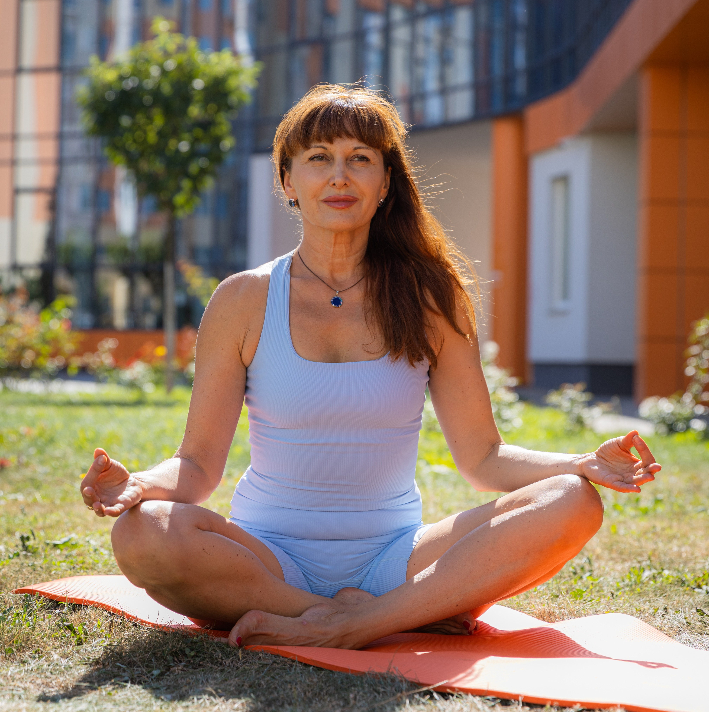

Ми проводимо заняття з йоги для всіх рівнів підготовки. Олена — досвідчений тренер, який допоможе вам покращити фізичний стан та внутрішню гармонію.

Олена — інструктор йоги з 20-річним досвідом практики та 5 років роботи з людьми. Мої заняття з йоги спрямовані на відновлення здоров'я тіла та психо-емоційного стану, покращення роботи організму та зняття стресу. Окремо я проводжу групові та індивідуальні сесії з метафорично-асоціативними картами (МАК). Під час них ми розбираємо запити, звільняємося від деструктивних програм і перепрограмовуємо підсвідомість, зміщуючи фокус на позитивне мислення та знаходячи нові рішення для життя. Моя мета — створити простір, де людина повертає свій внутрішній стан, стає щасливою, гармонійною та багатогранною, відчуває спокій, рівновагу та наповненість життям, і при цьому зберігає внутрішню опору, успіх і достаток.
📞 +380 67 280 85 52